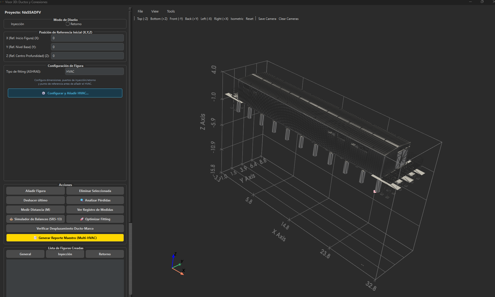

Proyecto real
Un proyecto de principio a fin
Sala eléctrica real. Modelo BIM importado. Red de ductos construida, calculada y verificada — todo dentro de la misma herramienta.
Vista Isométrica 3D
Clash Detection
Análisis de Pérdidas
Config. HVAC

Cargando…
Sala Eléctrica — Modelo BIM importado desde IFC
13 ensambles detectados · 15 456 elementos filtrados y cargados vía diálogo visual · Escena lista para trazado de ductos

Detección de interferencias — próximamente
Detección de Interferencias en Tiempo Real
Verificación automática de colisiones entre ductos y elementos estructurales

Análisis de pérdidas — próximamente
Tabla de Pérdidas por Sección — Sección Crítica Identificada
ΔP fricción + ΔP dinámica por tramo · ΔP acumulada · Margen vs. ESP_dis del equipo RTU

Diálogo HVAC — próximamente
Configuración del Equipo RTU
Q_dis (m³/h) · ESP_dis (Pa) · T_impulsión · Dimensiones de carcasa
Vista Isométrica 3D
⚡
Clash Detection
📊
Análisis de Pérdidas
⚙️
Config. HVAC